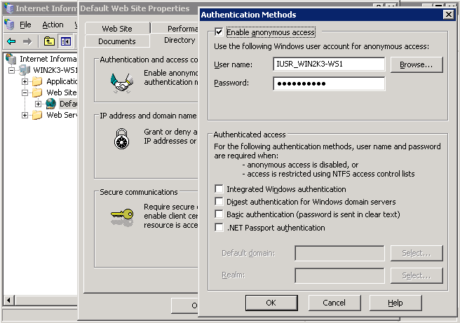

If you still receive 404 errors... try this...
I had to:
1) right click on My Computer, select Manage
2) open up "Services and Applications" -> "Internet Information Services" -> "Web Sites" -> mywebsite (where mywebsite could be "Default Web Site" or whatever my web site is named)
3) right-click on mywebsite and select Properties
choose the "Home Directory" tab, select Configuration... button
4) either select the .php extension and choose the Edit... button, or if .php isn't listed then press the Add... button
5) make the Executable C:\WINDOWS\system32\inetsrv\fcgiext.dll, the extension .php, and ensure Verbs are limited to GET,HEAD,POST, check the "Script engine" and "Verify that file exists" check boxes
Once I did this I at least now get the 500 fastcgi error
Microsoft IIS 5.1 および IIS 6.0
この節では、Internet Information Services (IIS) 5.1 および IIS 6.0 を手動で設定して、PHP を Microsoft Windows XP および Windows Server 2003 で動かす方法を説明します。 IIS 7.0 以降のバージョンを Windows Vista, Windows Server 2008, Windows 7 そして Windows Server 2008 R2 で動かす方法については Microsoft IIS 7.0 以降 を参照ください。
IIS で PHP リクエストを処理するための設定
手動インストールの手順 での説明にしたがって、PHP をダウンロードしてインストールします。
注意:
IIS を使う場合は、非スレッドセーフ版の PHP を推奨します。非スレッドセーフ版は » PHP for Windows: Binaries and Sources Releases. で取得できます。
CGI や FastCGI 固有の設定を、php.ini で以下のように行います。
例1 php.ini での CGI および FastCGI 用の設定
fastcgi.impersonate = 1 fastcgi.logging = 0 cgi.fix_pathinfo=1 cgi.force_redirect = 0
» Microsoft FastCGI Extension for IIS 5.1 and 6.0 をダウンロードしてインストールします。32 ビット版と 64 ビット版があるので、 環境にあわせて適切なパッケージを選びましょう。
FastCGI エクステンションを設定し、PHP のリクエストを処理できるようにするには 以下のコマンドを実行します。"-path" パラメータの値は、 php-cgi.exe の絶対パスに置き換えましょう。
例2 FastCGI エクステンションで PHP リクエストを処理するための設定
cscript %windir%\system32\inetsrv\fcgiconfig.js -add -section:"PHP" ^ -extension:php -path:"C:\PHP\php-cgi.exe"
このコマンドは、拡張子 *.php 用の IIS スクリプトマッピングを作成します。 .php で終わるすべての URL を FastCGI エクステンションで処理するようになります。 また、FastCGI エクステンションでの PHP リクエストの処理に php-cgi.exe を使うよう設定しています。
注意:
この時点で、最低限必要なインストールと設定は完了しました。 これ以降の手順は必須ではありませんが、IIS 上で PHP を効果的に動かすために強く推奨するものです。
匿名化およびファイルシステムへのアクセス
PHP を IIS で使う場合は、FastCGI の匿名化を有効にしておくことを推奨します。 これは、php.ini ファイルの fastcgi.impersonate ディレクティブで設定します。 匿名化を有効にすると、PHP はすべてのファイルシステム操作を IIS 認証で定義したユーザーアカウントで行います。 こうしておけば、同じ PHP プロセスを異なる IIS ウェブサイトで共有している場合でも (各サイトで IIS 認証のユーザーアカウントを分けておけば) 一方の PHP スクリプトからもう一方のファイルはアクセスできなくなります。
IIS 5.1 や IIS 6.0 のデフォルト設定では組み込みのユーザーアカウント IUSR_<MACHINE_NAME> による匿名認証が有効になっています。 つまり、IIS で PHP スクリプトを実行する場合は IUSR_<MACHINE_NAME> アカウントにスクリプトの読み込み権限を付与しなければならないということです。 PHP のアプリケーションからファイルへの書き込みやフォルダ内でのファイルの作成などをする場合は、 IUSR_<MACHINE_NAME> アカウントに書き込み権限が必要となります。
IIS 匿名認証で使うユーザーアカウントを設定するには、次のようにします。
-
Windows のスタートメニューで "ファイル名を指定して実行" を選び、"inetmgr" と入力して "Ok" をクリックする
-
ツリービューの "Web Sites" ノードにあるウェブサイトの一覧を展開し、 使うウェブサイトの上で右クリックして "プロパティ" を選択する
-
"ディレクトリセキュリティ" タブを選択する
-
"Authentication Methods" ダイアログの "User name:" フィールドで設定

ファイルやフォルダのパーミッションを変更するには、エクスプローラあるいは icacls コマンドを使います。
例3 ファイルのアクセス権の設定
icacls C:\inetpub\wwwroot\upload /grant IUSR:(OI)(CI)(M)
IIS のデフォルトドキュメントを index.php にする
ドキュメント名を指定しない HTTP リクエストを受け取ったときには、 IIS のデフォルトドキュメントが使われます。PHP アプリケーションでは、通常は index.php をデフォルトドキュメントとします。 index.php を IIS のデフォルトドキュメントに追加するには、 次のようにします。
-
Windows のスタートメニューで "ファイル名を指定して実行" を選び、"inetmgr" と入力して "Ok" をクリックする
-
ツリービューの "Web Sites" ノードを右クリックして "プロパティ" を選択する
-
"Documents" タブをクリックする
-
"Add..." ボタンをクリックし、"Default content page:" に "index.php" を入力する

FastCGI および PHP の再利用設定
IIS FastCGI エクステンションで PHP プロセスの再利用を設定するには以下のコマンドを使います。 FastCGI の設定項目 instanceMaxRequests は、 ひとつの php-cgi.exe が何回リクエストを処理すると FastCGI エクステンションがシャットダウンさせるかを表します。 PHP の環境変数 PHP_FCGI_MAX_REQUESTS は、 ひとつの php-cgi.exe プロセスが何回リクエストを処理すると 自分をリサイクルするかを表します。 FastCGI の InstanceMaxRequests で設定した値が PHP_FCGI_MAX_REQUESTS 以下になるようにしましょう。
例4 FastCGI と PHP の再利用設定
cscript %windir%\system32\inetsrv\fcgiconfig.js -set -section:"PHP" ^ -InstanceMaxRequests:10000 cscript %windir%\system32\inetsrv\fcgiconfig.js -set -section:"PHP" ^ -EnvironmentVars:PHP_FCGI_MAX_REQUESTS:10000
FastCGI のタイムアウト設定
実行時間が長くなる PHP スクリプトがある場合は、FastCGI エクステンションのタイムアウト設定を増やします。タイムアウトに関連する設定項目は ActivityTimeout と RequestTimeout です。 これらの設定に関する詳細は » Configuring FastCGI Extension for IIS 6.0 を参照ください。
例5 FastCGI のタイムアウト設定
cscript %windir%\system32\inetsrv\fcgiconfig.js -set -section:"PHP" ^ -ActivityTimeout:90 cscript %windir%\system32\inetsrv\fcgiconfig.js -set -section:"PHP" ^ -RequestTimeout:90
php.ini ファイルの場所の変更
PHP が php.ini ファイルを探す場所は いくつかあり、 php.ini ファイルのデフォルトの場所を 環境変数 PHPRC で変更することができます。 特定の場所においた設定ファイルを PHP に読み込ませたい場合は、 以下のコマンドを実行します。環境変数 PHPRC には、php.ini ファイルがあるディレクトリへの絶対パスを指定しなければなりません。
例6 php.ini ファイルの場所の変更
cscript %windir%\system32\inetsrv\fcgiconfig.js -set -section:"PHP" ^ -EnvironmentVars:PHPRC:"C:\Some\Directory\"